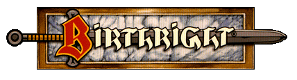

коробки
3100Birthright Campaign Setting (1995) — есть только колода боевых карт оттуда3103Cities of the Sun (1995)3121The Rjurik Highlands (1996)3129Havens of the Great Bay (1996)3134Naval Battle Rules: The Seas of Cerilia (1996)
сорсбуки
3104Player's Secrets of Roesone (1995)3105Player's Secrets of Endier (1995)3106Player's Secrets of Medoere (1995)3107Player's Secrets of Tournen (1995)3108Player's Secrets of Ilien (1995)3109Player's Secrets of Talinie (1995)3111Player's Secrets of Ariya (1995)3119Player's Secrets of Binsada (1996)3120Player's Secrets of Baruk-Azhik (1996)3122Player's Secrets of Halskapa (1996)3123Player's Secrets of Khourane (1996)3124Player's Secrets of Tuarhievel (1996)3127Player's Secrets of Stjordvik (1996)3135Player's Secrets of Hogunmark (1998)- Player's Secrets of Müden (1997) — существует только в электронном виде
дополнения
3101Blood Enemies: Abominations of Cerilia (1995)3140Blood Spawn: Creatures of Light and Shadow (2000) — существует только в электронном виде3147Tribes of the Heartless Waste (1997)3117The Book of Magecraft (1996)3126The Book of Priestcraft (1997)3137The Book of Regency (2000) — существует только в электронном виде
модули
3102Sword and Crown (1995)3110Warlock of the Stonecrowns (1995)3118The Sword of Roele (1996)3125Legends of the Hero-Kings (1996)3136Shadow Moon3141Charge of the Cold Rider3142King of the Giantdowns (1997)
хорошие сайты по теме
- Dark Sun Campaign Setting (AD&D) на Wayne’s Books
- Dark Sun TSR Archive